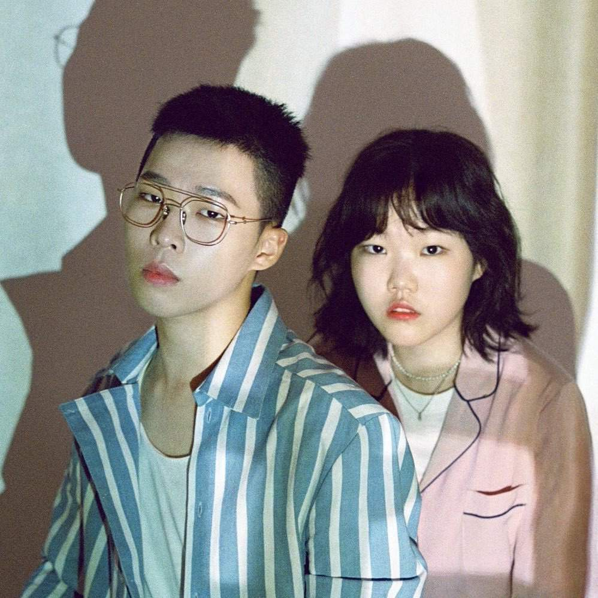

BIGBANG
Big Bang (Korean: 빅뱅; stylized as BIGBANG) is a South Korean boy band formed by YG Entertainment. The group consists of four members: G-Dragon, T.O.P, Taeyang, and Daesung. Dubbed the "Kings of K-pop", they helped spread the Korean Wave internationally and are one of the most influential acts in K-pop history. They are known for their trendsetting musical experimentation, self-production, and stage presence.

BLACKPINK
Blackpink (Korean: 블랙핑크; commonly stylized as BLACKPINK or BLΛƆKPIИK) is a South Korean girl group formed by YG Entertainment, consisting of members Jisoo, Jennie, Rosé, and Lisa. The group debuted in August 2016 with their single album Square One, which featured "Whistle" and "Boombayah", their first number-one entries on South Korea's Gaon Digital Chart and the Billboard World Digital Song Sales chart, respectively.

WINNER
Winner (Korean: 위너; stylized in all caps), is a South Korean boy band consisting of four members: Jinwoo, Seunghoon, Mino and Seungyoon. The band was formed in 2013 by YG Entertainment through Mnet's survival program WIN: Who Is Next leading to their official debut on August 17, 2014. Upon their debut, The Korea Herald cited their immediate success as "unprecedented" for a new group, thus dubbed as "Monster rookies". Winner is often cited as a "self-producing" band with all members actively taking on roles from producing and choreographing to designing and marketing.

AKMU
AKMU (Korean: 악뮤), also known as Akdong Musician (Korean: 악동뮤지션), is a South Korean sibling duo consisting of Lee Chan-hyuk and Lee Su-hyun who debuted under YG Entertainment in April 2014 with studio album Play after winning SBS' K-pop Star 2. Their debut album Play was well received by the public and critics, having sold more than 6.9 million downloads, and was awarded "Best Pop Album" in the 12th Korean Music Awards. The follow up albums Spring and Winter furthered their success.

IKON
iKon (Korean: 아이콘), stylized as iKON, is a South Korean boy band formed in 2015 by YG Entertainment, consisting of six members: Yunhyeong, Bobby, Jinhwan, Ju-ne, Chanwoo and Donghyuk. First introduced in the reality survival show WIN: Who is Next as "Team B", the group went on to appear in the 2014 reality survival show Mix & Match, which determined the final membership lineup of iKon. Originally a seven-piece band, B.I departed from the group in June 2019

TREASURE
Treasure (Korean: 트레저; RR: Teurejeo; stylized in all caps) is a South Korean boy band formed in 2019 by YG Entertainment through its reality-survival program YG Treasure Box (2018). The 12-piece band consists of members Choi Hyun-suk, Jihoon, Yoshi, Junkyu, Mashiho, Yoon Jae-hyuk, Asahi, Bang Ye-dam, Doyoung, Haruto, Park Jeong-woo and So Jung-hwan. After debuting in 2020 with their single album, The First Step: Chapter One, their tetralogy sold over one million copies five months into their career.